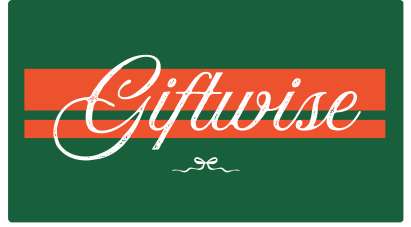
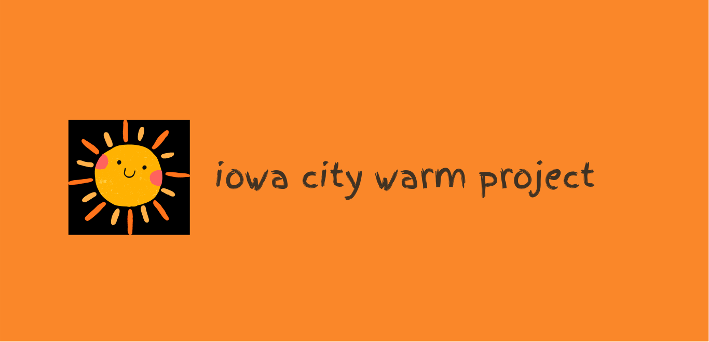
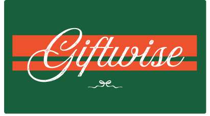
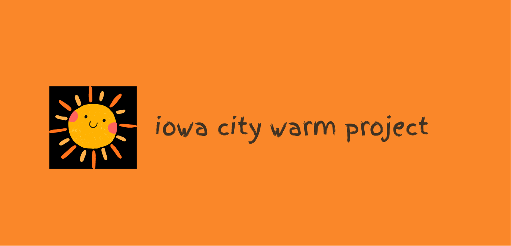

Nicholas Wilcox
Design-minded developer. I build clean, brand-consistent web experiences with strong typography, layout, and micro-interactions.
I like building data products where analysis actually changes decisions, especially in sports, media, and consumer behavior.
Sports Analytics | Data Engineering | SQL | Python | Storytelling w/ Numbers | Software Engineering | UI/UX Design

What I’m interested in
I’m most excited by problems where context matters as much as accuracy — the kind where you combine behavior, constraints, and incentives to explain outcomes.
Projects
 


